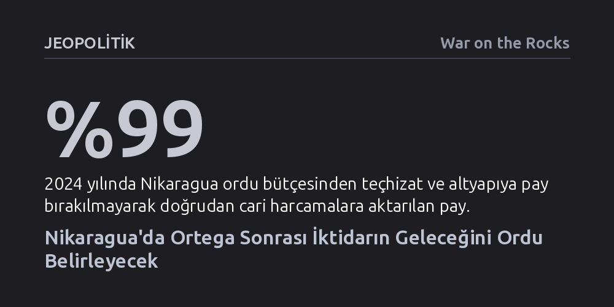

JEOPOLITIK · War on the Rocks · 2026-09-09
Nikaragua ordusu, seçimleri fiilen lağveden anayasa değişikliğine destek vererek Ortega rejiminin tek dayanağı haline geldi. 80 yaşındaki Ortega'nın ardından sivil kurum ve muhalefet kalmayan ülkede iktidarın kime kalacağını eşi Rosario Murillo değil, generaller belirleyecek.
Otoriter rejimlerde hanedan veraseti kağıt üzerinde kurgulansa bile, sivil siyasetin tamamen tasfiye edildiği bir düzende son sözü aile fertleri değil, kendi kurumsal çıkarlarını korumaya odaklanan silahlı kuvvetler söyler.

Nikaragua Devlet Başkanı Daniel Ortega, 2026 Temmuz ayında kamuoyu önüne çıkarak ülkede artık rekabetçi seçimlerin yapılmayacağını duyurduğunda, bu kararı meşrulaştırmak için parlamentoya çağrılan ilk kurum silahlı kuvvetler oldu. Genelkurmay Başkanı Orgeneral Julio César Avilés, tüm kuvvet komutanlıkları adına anayasa reform paketine koşulsuz destek sundu. Oysa aynı komutan, 2021 seçimlerinde halkın sandıktaki iradesine saygı duyacaklarını ve kazananı belirlemenin ordunun görevi olmadığını savunmuştu. Aradan geçen sürede yaşanan bu keskin dönüşüm, ordunun seçimle gelen sivil otoriteye bağlı anayasal bir güç olmaktan çıkıp, seçim meşruiyetini tamamen lağveden bir rejimin doğrudan bekçisi haline geldiğini belgeliyor.
Onaylanan anayasa paketi yalnızca seçimleri tasfiye etmekle kalmıyor; görevdeki tüm yöneticilerin görev sürelerini geriye dönük olarak yedi yıla uzatarak hem Ortega-Murillo çiftini hem de 22 yıllık bir komuta rekoruna koşan Avilés'i zırha büründürüyor. Ayrıca yabancı fon alan muhalif partilerin kapatılması ve uluslararası mahkeme kararlarının Nikaragua'da geçersiz sayılması gibi maddelerle rejim, olası dış yaptırımlara karşı anayasal bir kalkan inşa etti. Bu düzenlemeler, 2018 protestolarında kanlı bastırma operasyonlarına karışan ve Birleşmiş Milletler raporlarında adı geçen askeri komuta kademesini rejimin kaderine geri dönülmez biçimde ortak etti.
Ordunun rejime sadakati yalnızca ideolojik değil, somut bir mali mimariyle inşa edilmiş durumda. Askeri Sosyal Güvenlik Enstitüsü (IPSM), inşaattan perakendeye, ilaç sanayiinden gayrimenkule ve üniversitelere kadar uzanan devasa bir ticari holding haline geldi. Ordu bütçesinin yüzde 99'u doğrudan personel ve cari harcamalara giderken, modern savunma teçhizatına neredeyse tek bir kuruş kalmıyor. Dolayısıyla subayların refahı ve emeklilik gelirleri tamamen ordunun kontrolündeki bu ticari varlıkların korunmasına bağlı; bu da olası bir rejim değişikliğini askeri elitler için çok yüksek bir maliyet haline getiriyor.
Buna rağmen Ortega ve Murillo çifti üniformalıların bağlılığından hiçbir zaman tam olarak emin olamadı. Son reformlarla devlet başkanına genelkurmay başkanını doğrudan görevden alma yetkisi getirilirken, orduyu kuran emekli generallerden Álvaro Baltodano gibi isimler vatana ihanet suçlamasıyla tutuklanıp mallarına el kondu. Dahası, ordunun terfi sistemi bir kariyer basamağı olmaktan çıkarılıp denetim mekanizmasına dönüştürüldü. Uzmanların 'kurumsal tıkaç' olarak tanımladığı bu yapıda, Avilés ve çekirdek general kadrosu 15 yıldır koltuklarında otururken alt kademedeki albayların terfileri kasıtlı olarak kilitlendi. Venezuela ordusunun binlerce general üreterek sadakat dağıtmasının aksine Nikaragua, rütbeleri kısarak tepeye mutlak bağımlı, sayıca az ama hareketsiz bir albay kuşağı yarattı.
Kağıt üzerindeki anayasal kurgu veraset sürecini net bir şekilde tanımlıyor: 80 yaşındaki Daniel Ortega hayatını kaybettiğinde yerine yasal eş-başkan olan eşi Rosario Murillo geçecek; arkasında ise Moskova ve Pekin hattındaki ilişkileri yöneten oğulları Laureano Ortega bekleyecek. Ancak Ortega'nın ordu üzerinde yarım asırdır süregelen kişisel devrimci mirası ve otoritesi eşine doğrudan devredilemiyor. Murillo ulusal polis teşkilatını mutlak biçimde kontrol etse de, ordunun itaatini sahada kazanmış bir figür değil. Ortega öldükten sonra ordunun Murillo'ya aynı itaati gösterip göstermeyeceği, Nikaragua'nın geleceğindeki en kritik bilinmeyen olarak duruyor.
Üstelik Venezuela tipi bir geçiş senaryosunun Nikaragua'da tekrarlanması mümkün görünmüyor. Venezuela'da uluslararası aktörlerin elinde petrol gibi güçlü bir koz, ordu içinde bağımsız hareket edebilecek klikler ve rejimi dengede tutabilecek alternatif sivil aktörler vardı. Nikaragua'da ise petrol bulunmadığı gibi, yaklaşık 14.500 kişilik ordu tek parça bir komuta yapısına sahip ve ülke içinde ayakta kalan hiçbir organize sivil muhalefet kalmadı. Ortega ve Murillo iktidardan ayrıldığı anda ortada devleti tutabilecek silahlı kuvvetlerden başka hiçbir kurum bulunmayacak.
Rejim bölgesel tecrit derinleştikçe güvenliğini Rusya ve Çin'e havale etti. Avilés'in Moskova ziyareti sonrası yürürlüğe giren askeri anlaşma, Rus askerlerine Nikaragua sularında ve karargahlarında özel hukuki koruma sağlarken ortak istihbarat ve elektronik harp işbirliğini genişletti. Managua'daki mayın temizleme okulu dahi Rusya adını taşıyor. Çin ise maden imtiyazları ve serbest ticaret anlaşmasıyla Managua üzerindeki ekonomik nüfuzunu pekiştiriyor.
Buna karşılık ABD ile resmi güvenlik işbirlikleri yıllar önce durdurulmuş olsa da iki ülkenin subayları bölgesel çok taraflı toplantılarda aynı masada oturmaya devam ediyor. Bu kanalların korunması hayati önem taşıyor; zira Washington'ın orduyu toptan dışlamak yerine, suça karışmış tepe yöneticiler ile kurumsal ordunun kendisini ayıran bir yaptırım dili benimsemesi gerekiyor. Gelecekte demokratik standartlara uyan, insan hakları ihlallerinin hesabını veren ve ticari holdinglerden ayrışan profesyonel bir orduya açık kapı bırakmak, sistemin tıkanıklığı altında sıkışmış yüzlerce orta kademe subaya rejim sonrası için Rusya'ya bağımlı olmaktan başka bir alternatif olduğunu hatırlatabilecek tek yol.